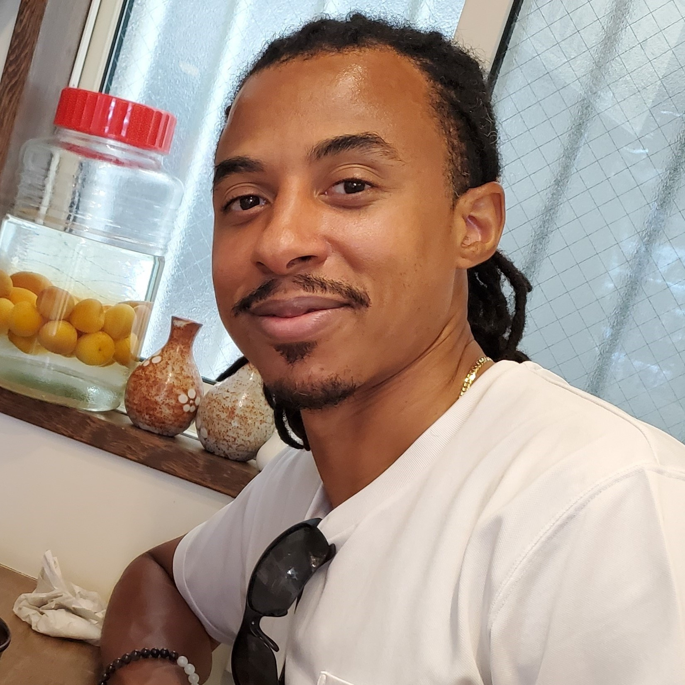

I'm a game designer passionate about systems thinking, player psychology, and interactive storytelling. I approach every project with a critical eye for how mechanics and narrative intertwine to shape player experience.
Outside of design, I produce electronic music and use it as a lens for understanding rhythm, tension, and release — principles that translate directly into pacing and feedback design in games.
I'm currently looking for opportunities in game design, UX, or creative strategy roles where I can bring both analytical rigour and creative intuition.
J PREP / J Institute
UD Trucks, Tokyo Metropolitan Government, JASDF, TEPCO, etc. via IES
Please feel free to reach out with questions, quips, quotes or any other queries.
Say Hello